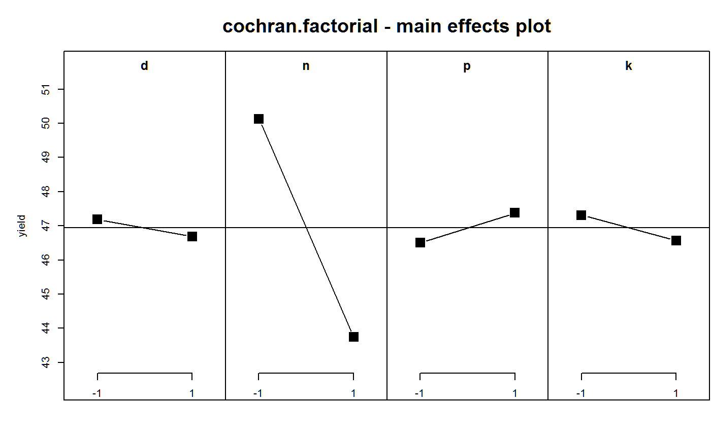

cochran.factorial.RdFactorial experiment in beans
data("cochran.factorial")
A data frame with 32 observations on the following 4 variables.
reprep factor
blockblock factor
trttreatment factor, 16 levels
yieldyield (pounds)
Conducted by Rothamsted Experiment Station in 1936. The treatments are listed below.
d = dung: None, 10 tons/acre.
n = nitrochalk: None, 0.4 hundredweight nitrogen per acre.
p = Superphosphate: None, 0.6 hundredweight per acre
k = muriate of potash: None, 1 hundredweight K20 per acres.
The response variable is the yield of beans.
Cochran, W.G. and Cox, G.M. (1957), Experimental Designs, 2nd ed., Wiley and Sons, New York, p. 160.
# \dontrun{ library(agridat) data(cochran.factorial) dat <- cochran.factorial # Split treatment into individual factors dat <- transform(dat, d = -1 + 2 * grepl('d',trt), n = -1 + 2 * grepl('n',trt), p = -1 + 2 * grepl('p',trt), k = -1 + 2 * grepl('k',trt)) dat <- transform(dat, d=factor(d), n=factor(n), p=factor(p), k=factor(k)) # Cochran table 6.5. m1 <- lm(yield ~ rep * block + (d+n+p+k)^3, data=dat) anova(m1)#> Analysis of Variance Table #> #> Response: yield #> Df Sum Sq Mean Sq F value Pr(>F) #> rep 1 3.12 3.12 0.1288 0.725064 #> block 1 78.13 78.13 3.2193 0.094393 . #> d 1 2.00 2.00 0.0824 0.778258 #> n 1 325.12 325.12 13.3974 0.002572 ** #> p 1 6.12 6.12 0.2524 0.623205 #> k 1 4.50 4.50 0.1854 0.673303 #> rep:block 1 45.12 45.12 1.8595 0.194213 #> d:n 1 32.00 32.00 1.3186 0.270083 #> d:p 1 242.00 242.00 9.9720 0.006982 ** #> d:k 1 6.13 6.13 0.2524 0.623205 #> n:p 1 78.13 78.13 3.2193 0.094393 . #> n:k 1 32.00 32.00 1.3186 0.270083 #> p:k 1 24.50 24.50 1.0096 0.332058 #> d:n:p 1 2.00 2.00 0.0824 0.778258 #> d:n:k 1 10.13 10.13 0.4172 0.528774 #> d:p:k 1 15.13 15.13 0.6233 0.443007 #> n:p:k 1 32.00 32.00 1.3186 0.270083 #> Residuals 14 339.75 24.27 #> --- #> Signif. codes: 0 '***' 0.001 '**' 0.01 '*' 0.05 '.' 0.1 ' ' 1libs(FrF2)#>#>#> #>#> #> #>#> #> #>#> #>#> #> #>#> #> #>#> #> #>aliases(m1)#> [1] no aliasing in the modelMEPlot(m1, select=3:6, main="cochran.factorial - main effects plot")# }